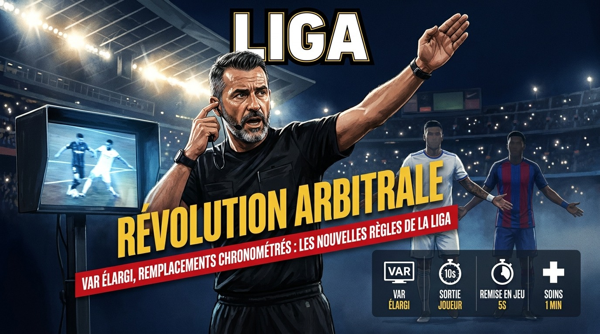
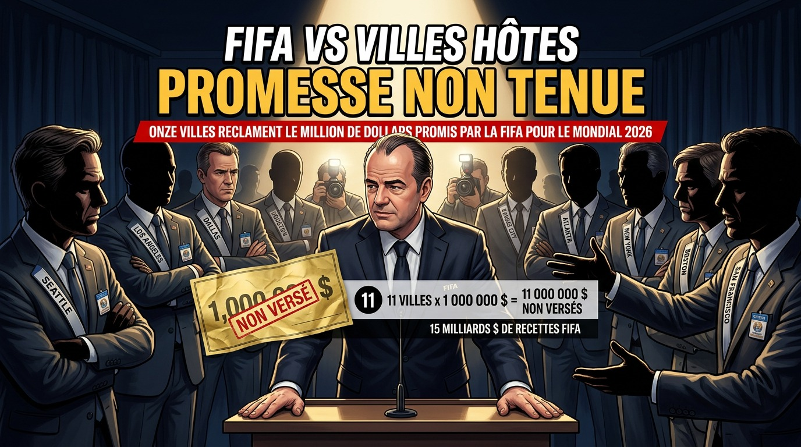
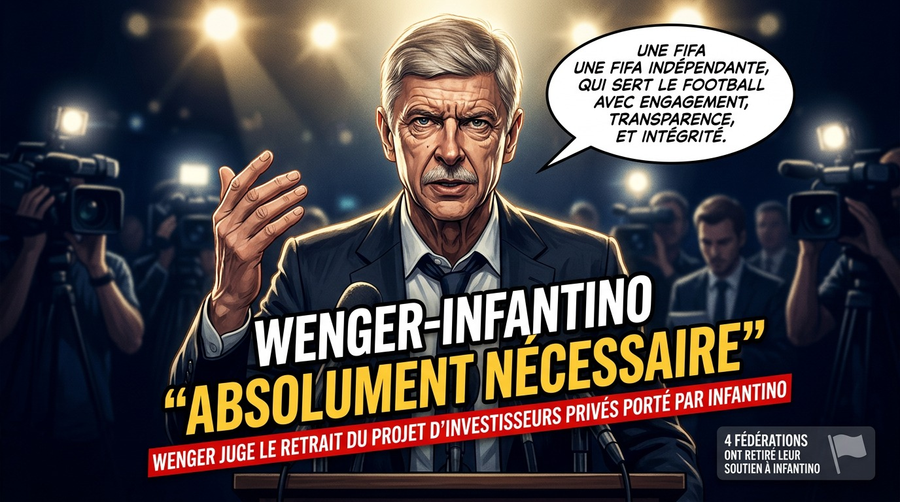
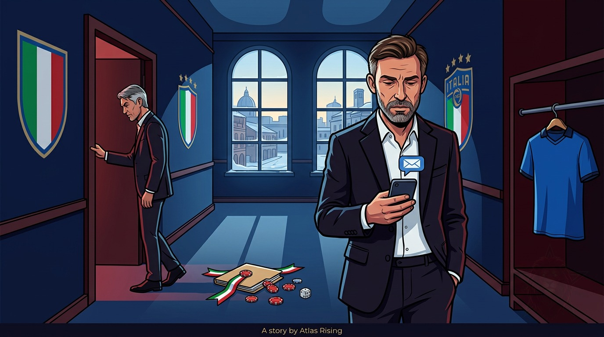
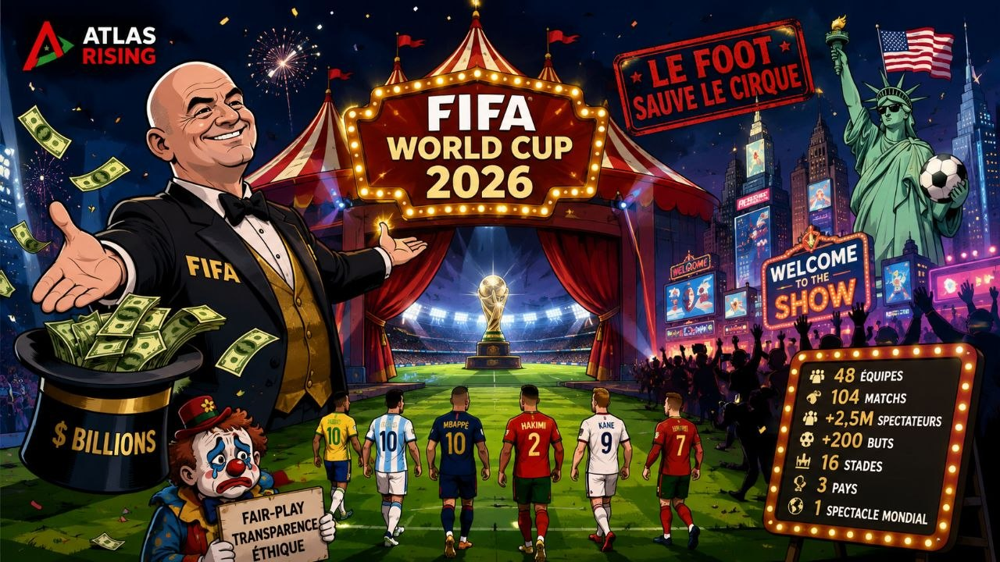

Football Mondial
Manchester United : Mazraoui reprend l'entraînement
Noussair Mazraoui a rejoint le groupe de Manchester United pour sa première séance de pré-saison, après son repos post-Coupe du monde 2026.
Noussair Mazraoui a rejoint le groupe de Manchester United pour sa première séance de pré-saison, après son repos post-Coupe du monde 2026.

La Liga introduit de nouvelles règles arbitrales pour la saison à venir : VAR élargi, remplacements chronométrés et décisions expliquées en direct.

Onze villes américaines organisatrices de la Coupe du monde affirment que la FIFA leur avait promis un million de dollars chacune, sans jamais les verser.

Le directeur du développement mondial du football à la Fifa a rompu son silence sur le projet avorté d'investisseurs privés porté par Infantino.
L'ancien défenseur de Manchester City a cédé aux enchères la réplique de son trophée de champion du monde 2018, contre 62 000 dollars.
Carlos Cordeiro, proche collaborateur de Gianni Infantino, démissionne pour dénoncer le projet de vente d'une partie des droits commerciaux du Mondial.
L'UEFA rêvait de voir Nasser Al-Khelaïfi défier Gianni Infantino à la présidence de la FIFA en mars 2027, mais le patron du PSG a tranché net.
Le président argentin dénonce un financement du Brésil, du Mexique et du Parti démocrate américain visant son pays autour du Mondial 2026.

Andrea Pirlo ne sera finalement pas sélectionneur d'Italie, ses liens avec un bookmaker russe ayant provoqué une polémique politique malgré un accord initial.
L'attaquant de Manchester City a repris la célébration virale du Mondial 2026 lors du mariage de son coéquipier Gianluigi Donnarumma, en Italie.
Critiqué pour sa participation à un tournoi de poker, Neymar a répondu sur le terrain avec un doublé décisif pour Santos face à Chapecoense.
Un homme de 54 ans a été mortellement percuté par un engin de chantier lors des travaux de rénovation du stade du FC Barcelone. Une enquête est ouverte.

Après six semaines de compétition, Atlas Rising dresse le bilan sans concession de cette Coupe du monde 2026, entre réussites et déceptions.
La FFF officialise la date de présentation du successeur de Didier Deschamps, très largement pressenti pour être Zinédine Zidane.